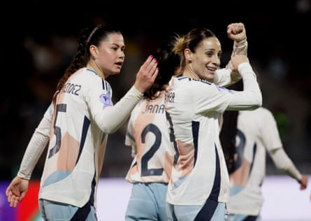
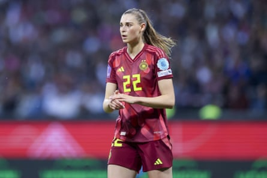
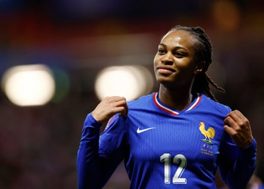

Y ou only have to wind the clock back two full major-tournament cycles, to Euro 2017, and there were no fully professional women’s leagues in Europe. Thanks to increased investment in the women’s game, there are now more than 3,000 full-time female players across the continent, and that professionalisation is why my overriding feeling about this summer’s Euros is that the quality is going to be so much higher than we have seen before. And it will be so tight.
In Spain, England and Germany there are three strong favourites who are all capable of going on to win it and I would add the Netherlands to the top four. I was so impressed when we [the United States] played the Dutch in December. They will need everybody fit but, on their day, they are a top side. Beyond that, this tournament is going to show the prowess of the Nations League, which was introduced since the most recent Euros, and the impact that tournament is having on equality.
We have seen the increased strength in depth of competitive teams in the Nations League, whether it be a resurgent Belgium who have got some real qualities in their side, or Italy who I think are on the rise – and it’s about time – and of course you can never rule out the French. If they manage to get things together they might win a tournament. At the moment you have to talk about France in that next bracket outside the favourites. Can they reach the levels their club teams do? I don’t know, but you cannot overlook them.
Spain's Esther Gonzalez celebrates after scoring against Portugal in April.Photograph: Miguel Vidal/Reuters
To win this tournament it will take a team, first and foremost, and as a coach you have to work hard to keep everyone connected and feeling valued. I’ve learned that from failures in my career, not just the success of winning a gold medal. You want to make sure that, when you stand at the podium, the player who played no minutes feels a part of it. Do not underestimate the importance of that – the team that gets that right has a great shout of going all the way and winning the final in Basel. A lot of the buildup to this tournament has been dominated by news of the players who are not going to Switzerland, whether that be France leaving out Wendie Renard or Fran Kirby bringing forward her retirement from international duty after Sarina Wiegman spoke to her honestly about her chances of playing. All 16 head coaches have had to disappoint players. As a coach, these types of conversations are really hard, when you tell someone they are not selected. You can still be kind, but there is no easy way to do it, because you’re giving someone the news they don’t want to hear.
In my experience, when you deliver that news, players just want honesty, so being straight-up and direct is the best approach. You have to be able to say: “Look, I’m just giving you a call to let you know that you didn’t make the squad,” and usually I give a rationale behind that, and then you ask if there are any questions. And if there aren’t then it’s best to end the call there and then, because they don’t want to be on the call with you, they want to process it.
It’s a little bit like parenting, in many regards; if your child comes home disappointed about something, it’s best not to say, “Oh, but you’re good at maths,” if they are not. Instead I say: “Oh that’s tricky, how does that feel for you?” and you process it because the reality is we all spend our life facing lots of setbacks. So I may have changed some of my style over the years but I always believe in delivering news in a humane way. At the end of delivering news to maybe 15 or 20 players that aren’t picked, you are exhausted, as well as disappointed for them all, but it is part of the job.
Jule Brand is part of a Germany team full of young talents.Photograph: Marco Steinbrenner/DeFodi Images/Shutterstock
We were only allowed to pick 18-player squads for last summer’s Olympics, but that was not the only difference my staff and players faced in France; you played a match every three days. In the World Cup or Euros you are usually playing every four-to-five days and that extra day makes a huge difference in players’ recovery. For the teams in Group D this July – France, England, the Netherlands and Wales – to win the tournament, for example, they would have to play six times in 23 days, and trust me, when players are recovering, every second counts.
After an evening game, think about it, these players aren’t going to sleep until 3am, so the day after a game is an absolute wipe-out. For some players it’s a combination of massage, ice-baths and mobility, and with the USA we get cryotherapy chambers and oxygen tanks. For some people it’s just about going for a walk, getting fresh air and sleep, it’s very individualised, but assume matchday+1 is just a write-off. Matchday+2 is usually when the most explosive players feel their body the most, so for a winger, a forward, those Ferrari players who burn the most petrol, phwoar, matchday+2 is tough for their bodies. Now if you add the extra day in-between, you can start your engines again in training and you’re in a much better position.
Going back to the teams who might win it I have to say that, at the Olympics, I was very impressed with Germany and their young cohort that have come through. They have now been through their cyclical change and I think this is another German group that is on the rise. They have got players such as Jule Brand, Lea Schüller and Klara Bühl who can cause endless problems. The main question is if they have enough depth.
France's Marie-Antoinette Katoto is among the world’s best strikers.Photograph: Stéphane Mahé/Reuters
As for England, they are missing senior, experienced players, which will be a loss. The loss of Millie Bright, to any dressing room, is huge – she’s a leader who will calm a group and also keep them focused. It’s the same with Mary Earps in different capacities. Now it will be interesting to see how England cope if there are any injuries or suspensions – there’s a lack of experience on their bench, which sometimes happens when you’re evolving a team and it’s England’s time to experience that. Not with the starting XI though. In their starters they possess a depth of experience. They will need Lauren Hemp, Alessia Russo and Lauren James to be fit, of course, but it is a high-quality, experienced England team.
Spain have a rising star in Clàudia Pina and, in Alexia Putellas, they’ve got a player who is back to her top, top level. Ask any player that plays against Spain and they will say it works your brain so hard. But they can be beaten. Yes, there are differences between Barcelona and Spain, but playing-style wise and methodology-wise there are a lot of similarities – you have to be so deadly in your transitions because you won’t dominate the ball, and you have to accept that and disrupt it in organised ways, which I thought Arsenal did superbly in the Champions League final. Reneé Slegers did an incredible job of setting the team up for that. It showed how it can be done.